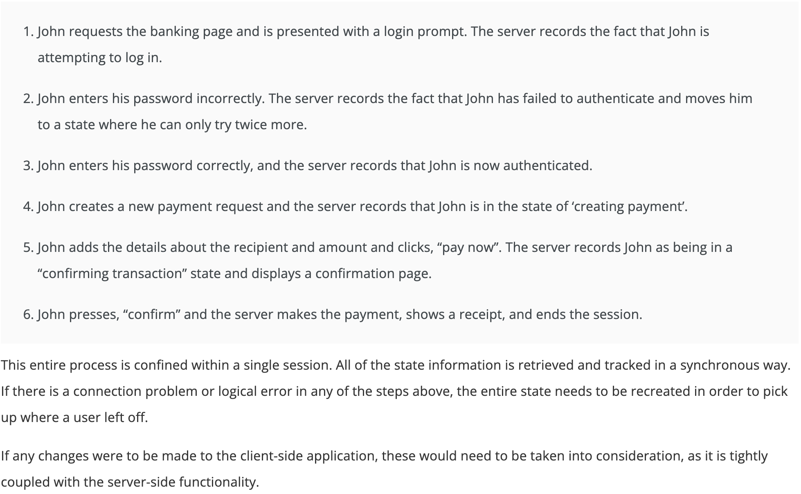
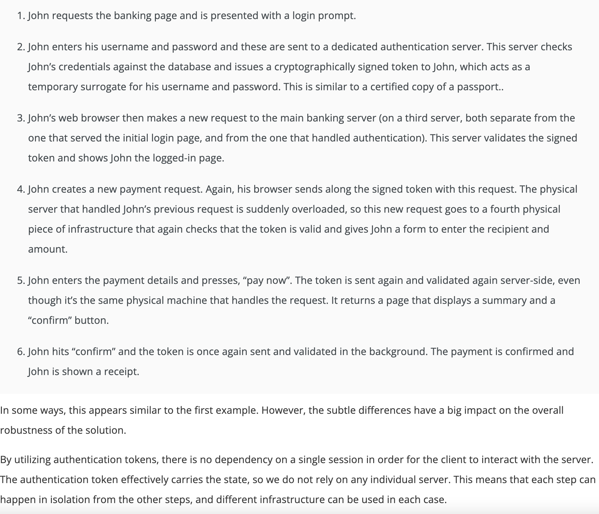

System Design Summary
Contents
System Design Summary#
Asynchronous request reply#
Client sends POST request and gets HTTP 202 accepted message
Client again sends GET request to status endpoint and gets pending HTTP 202 accepted message
Later status endpoint on job completion sends HTTP 302 redirecting response
Client fetches resource back from URL

\(\text{https://docs.microsoft.com/}\)
Sharding database#
Types of partitioning#
Horizontal partitioning(sharding)
separating table rows into multiple tables with same schema
Vertical partitioning
separating columns into distinct tables
What is Sharding#
breaking data into logical shards
distribute these logical shards into separate database nodes or into physical shards
physical shards can hold multiple logical shards
helps in mitigating impact of outages
Benefits of sharding#
horizontal scaling or scaling out
adding more machines to exsiting stack to spread out load and allow for more traffic
vertical scaling or scaling up
upgrading hardware by adding more RAM or CPU
Sharding architectures#
Key based sharding
hash based sharding based on partition key
Range based sharding
for example, price range
Directory based sharding
maintain lookup table
Multiple tenants might share the same shard, but the data for a single tenant won’t be spread across multiple shards

\(\text{Types of Partitioning - digitalocean.com}\)

\(\text{Lookup Partitioning - https://docs.microsoft.com/}\)
Stateful vs Stateless#

\(\text{Stateful vs Stateless - https://virtasant.com/}\)
A banking transaction - Stateful 
\(\text{Stateful Transaction - https://virtasant.com/}\)
A banking transaction - Stateless 
\(\text{Stateless Transaction - https://virtasant.com/}\)
Orchestration#
Run multiple container instances in each node.
Load balance traffic between the instances.
Manage communication between dependent instances in separate nodes.
Maintain the desired cluster state.
The container orchestrator:
automatically scales number of microservice instances based on traffic or resource utilization
manages containers to reflect the configured desired state
wraps container for each microservice in a simple service layer, abstracting out complexities of IP address, port, and number of instances
load balances traffic between microservice instances
Examples:
Kubernetes

\(\text{Multi-container Cluster orchestrator - https://docs.microsoft.com/}\)
Loose coupling#
Software Design Patterns#
Creational patterns#
Structural patterns#
Behavioral patterns#
Concurrency patterns#
Other design patterns#
Inversion of Control#
Dispatcher#
Dependency Inversion principle#
Callbacks#
Schedulers#
Event Loops#
Dependency Injection#
Template Method#
Decorator vs Wrapper pattern#
Fan-out pattern#
Fan-in/Fan-out pattern#
Low fan-in, low fan-out: a module with little dependencies in either direction. All good.
High fan-in, low fan-out: a module that’s highly depended upon, but itself doesn’t depend on much. Like a low-level utility library.
Low fan-in, hight fan-out: a module that depends on lots of other modules, but a few if any modules depend on it. You really can’t avoid having one top-level module to tie your whole application together, and naturally this module will depend on each and every other module in the system.
High fan-in, hight fan-out: a very problematic module that can break / need changes whenever one of its many dependencies changes, and it’ll in turn break many other parts in the system that rely on it.
Mixin pattern#
What is the difference between mixin and multiple inheritance
SOLID design principles#
The SOLID ideas were introduced by Robert C Martin in his paper:
Single-responsibility principle: “There should never be more than one reason for a class to change.” In other words, every class should have only one responsibility
Open–closed principle: “Software entities … should be open for extension, but closed for modification.”
Liskov substitution principle: “Functions that use pointers or references to base classes must be able to use objects of derived classes without knowing it.”
Interface segregation principle: “Many client-specific interfaces are better than one general-purpose interface.”
Dependency inversion principle: “Depend upon abstractions, not concretions.”
Single responsibility pattern#
Each component has one responsibility only within a system
With this pattern, the components are loosely coupled and it doesnot impact functionality of other components
for example, a database cannot contain business logic, its job must remain to persist the data only
Separation of Concerns#
Antipatterns#
Event driven architecture#
Publish-Subscribe pattern#
Request-Reply#
Sockets#
Unix Sockets#
Message Queue#
Producer Consumer Queue#
SOAP#
REST#
Event channels#
HTTP endpoint#
Web service#
API design#
RPC vs REST vs GraphQL#
RPC - Remote Procedure Call#
call function in remote server
wrap a function over transport and have an endpoint attached to it, and we get RPC
GET /listConversations
GET /listMessages
POST /sendMessage
REST#
GraphQL#
Webhook#
Functional programming#
Functions dont retain any state
this means they are stateless and helps in maintaining consistent application wide state
ACID compliant#
Atomicity
Transactions are made up of multiple statements
Atomicity guarantees that either it succeeds completely, or fails completely
if any statement in a transaction fails to complete, the entire transaction fails and the database is left unchanged
Consistency
any data written to database must be valid as per the rules, including constraints, cascades, triggers, and any combination thereof.
no illegal/incorrect transaction must be allowed
Isolation
concurrent execution of transactions leaves database in same state if the transactions were executed sequentially
incomplete transaction must not be visible to other transactions
Durability
if a transaction has been committed it will remain committed during reboot or a system failure or crash
BASE semantics#
basically-available, soft-state, eventual consistency
Eventually consistent services has only liveness guarantee - updates will be observed eventually
Basically available: reading and writing operations are available as much as possible (using all nodes of a database cluster), but might not be consistent (the write might not persist after conflicts are reconciled, the read might not get the latest write)
Soft-state: without consistency guarantees, after some amount of time, we only have some probability of knowing the state, since it might not yet have converged
Eventually consistent: If we execute some writes and then the system functions long enough, we can know the state of the data; any further reads of that data item will return the same value
CRUD#
Create, Read, Update, Delete
Staged event-driven architecture (SEDA)#
iPaaS#
Data Ingestion Pipeline Patterns#
Data Modeling#
Relational data modeling
Dimensional data modeling
Graphical data modeling
Message Broker Models#
Point-to-point messaging
Publish/subscribe messaging
https://www.ibm.com/cloud/learn/message-brokers#toc-message-br-Qe5q5uIC
Micro frontends#
Micro-frontend architecture is a design approach in which a front-end app is decomposed into individual, semi-independent “microapps” working loosely together. The micro-frontend concept is vaguely inspired by, and named after, microservices.
Micro-frontend architectures may be simpler, and thus easier to reason about and manage.
Independent development teams can collaborate on a front-end app more easily.
They can provide a means for migrating from an “old” app by having a “new” app running side by side with it.

\(\text{https://miro.medium.com}\)
Service Mesh#
https://istio.io/latest/about/service-mesh/#what-is-a-service-mesh
RESTful vs RESTless#
Protocol
RESTful services use REST architectural style,
RESTless services use SOAP protocol.
Business logic / Functionality
RESTful services use URL to expose business logic,
RESTless services use the service interface to expose business logic.
Security
RESTful inherits security from the underlying transport protocols,
RESTless defines its own security layer, thus it is considered as more secure.
Data format
RESTful supports various data formats such as HTML, JSON, text, etc,
RESTless supports XML format.
Flexibility
RESTful is easier and flexible,
RESTless is not as easy and flexible.
Bandwidth
RESTful services consume less bandwidth and resource,
RESTless services consume more bandwidth and resources.